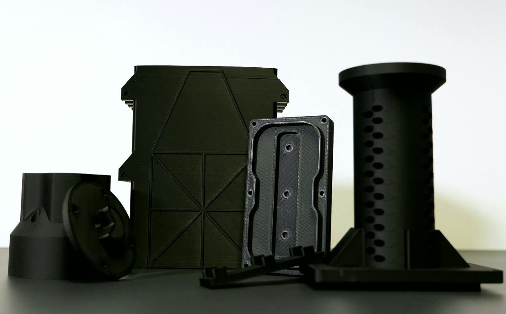

Equipment › Build and house
3D printer
Dual-extrusion FDM printer
Fixtures, holders and detector mechanics printed in-house.
Work with us on this instrument
What it does
A fused-filament printer builds a part layer by layer from melted plastic. With two extruders it prints two materials in the same part, for example a removable support under overhangs.
We print what would be slow or expensive to machine: fixtures shaped around a particular crystal, jigs for dicing, polishing and metrology, supports and covers for detector prototypes. A design goes quickly from CAD to the bench and can change as often as the tests require.
What we use it for
Fixtures for processing and metrology
Jigs that hold crystals for dicing, polishing and measurement.
Detector prototypes
Mechanics for detector and calorimeter prototypes.
Working with us
We can print fixtures and mechanics for joint experiments.
